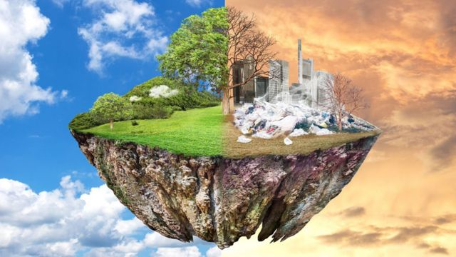
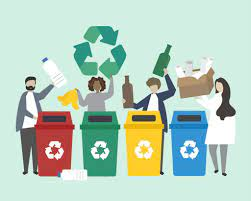
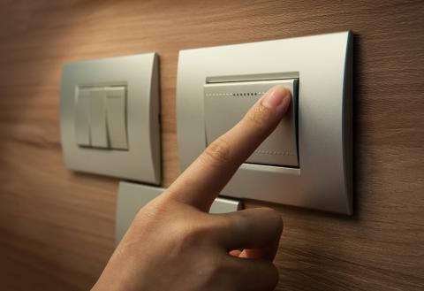
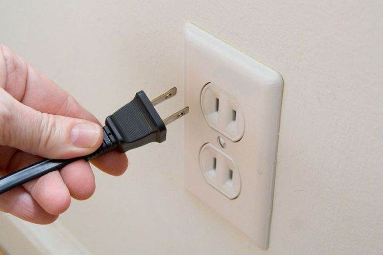
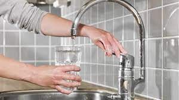

>ritle>planeta tierra>/title>
>/head>
>body bgcolor="blue">
Todos nosotros sabemos de alguna manera que nuestro planeta se contamina dia a dia por nuestra presencia, y que algun dia acabaremos con el, sabemos del calentamiento global, de la desglaciación, de la desaparicion paulatina de la capa de ozono, etc.
PROBLEMAS AMBIENTALES
|
Problema
|
niños y niñas que lo mencionan
|
| Falta de agua potable |
6 |
| Contaminacion del suelo |
3 |
| Contaminacion de agua |
5 |
| Quema de basura |
2 |
| Incendios forestales |
3 |
pero acaso nos hemos preguntado ¿Que hago para que eso no suceda?, tal vez nada. si bien es cierto que nuestra contaminación es nada comparada con la que realizan las grandes potencias mundiales sin embargo son los principales criticos, peri si no podemos hacer casi nada ahora---DEMOS EL PRIMER PASO...

RECUERDA QUE CON UN PEQUEÑO PASO HACEMOS MUCHO, MIENTRAS MAS PERSONAS APOYEN, MAS FUNCIONA.
Cuidamos ahorrando agua, cuidando a los animales para que las especies prevalescan, ahorrando energia, no tirando basura, ayudar a limpiar las areas enfermas del planeta y mucho mas.
PON TU GRANITO DE ARENA
1. Separa la basura. Reciclar es muy importante, tanto así que en Madrid, se ha dispuesto de una campaña, denominada “Acierta con la orgánica”, que busca que los habitantes de aproximadamente 12 distritos de la capital, separen sus residuos orgánicos y estos sean depositados en un contenedor de tapa color marrón. Con esto la administración busca que en 2020 el 50% de los residuos domésticos y comerciales, puedan ser destinados para la reutilización y el reciclaje.

2. Apaga las luces. Acostumbrarse a apagar las luces que no estamos utilizando también es una acción que todos en casa y en el trabajo podemos poner en marcha y, desde luego, utilizar la luz del día puede reducir el consumo energético en nuestros hogares.

3. Evita dejar los aparatos enchufados. El cargador del móvil, la televisión, el PC, entre otros aparatos, que cuando están apagados siguen consumiendo energía, por eso cuando no estén en uso, es importante desenchufarlos.

4. Cierra los grifos correctamente y cuida el agua,ahorra y usa de una forma eficiente el agua cerrando el grifo, y controla que no existan fugas. Para la ONU, el agua es el epicentro del desarrollo sostenible y el desarrollo socioeconómico mundial y señala que hasta la fecha la escasez de agua ya afecta a 4 de cada 10 personas.

5. Lleva tus propias bolsas al supermercado. Ahora en casa o en el trabajo las bolsas reutilizables abundan, así que llevar una al supermercado no es una difícil tarea. Algo que sin duda nos puede hacer recordar que debemos evitar el uso de bolsas de plástico, ya que la producción de estas, requiere la utilización de aproximadamente 12 millones de barriles de petróleo, su degradación tarda aproximadamente 20 años.
Generar pequeñas acciones desde nuestros hábitos diarios, puede suponer grandes y positivos cambios al planeta tierra y la tecnología de la Bomba de Calor, contribuye significativamente a ello.
Reutiliza al máximo todos los artículos o productos antes de deshacerte de ellos. Por ejemplo, usa las hojas de papel por ambos lados; transforma las latas en lapiceros, joyeros o macetas. ¡Dale vuelo a tu imaginación! Desecha sólo lo que ya no se pueda volver a usar.
En el recreo procura comer frutas y verduras y bebe agua pura para quitarte la sed.
Los residuos orgánicos, como cáscaras de frutas y verduras, sobrantes de comida servilletas de papel, pasto, hojas, ramas, entre otros, deberán ir en un contenedor especial.
Con la materia orgánica puede producirse composta, la cual sirve como abono natural de hortalizas y árboles o para enriquecer el suelo.
Clasifica los residuos inorgánicos en forma independiente según su tipo; aplasta las latas de aluminio para reducir su volumen; junta y aplasta todos los envases y botellas de plástico, esto facilita su clasificación y reciclaje.
Enjuaga los envases usados de cartón y aplástalos para facilitar su acopio.